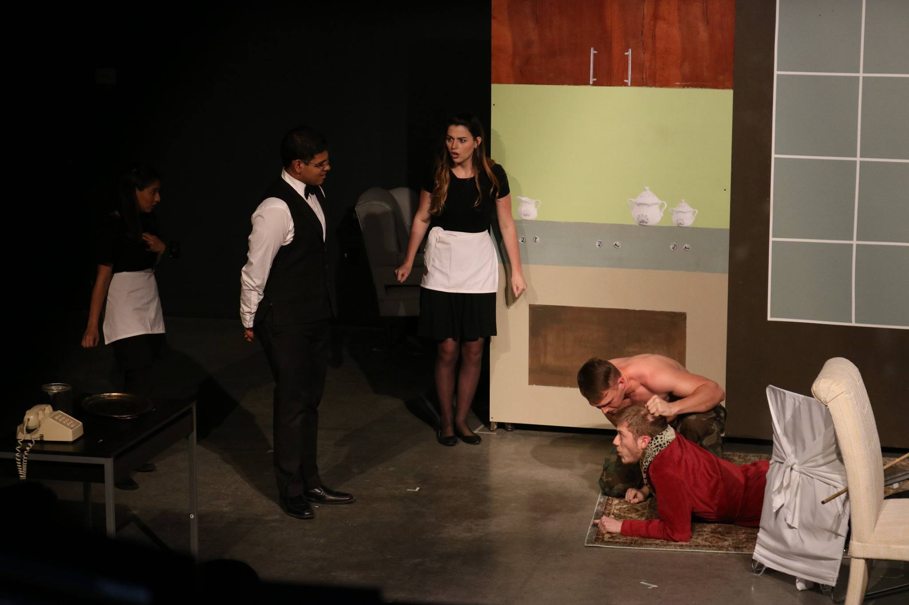
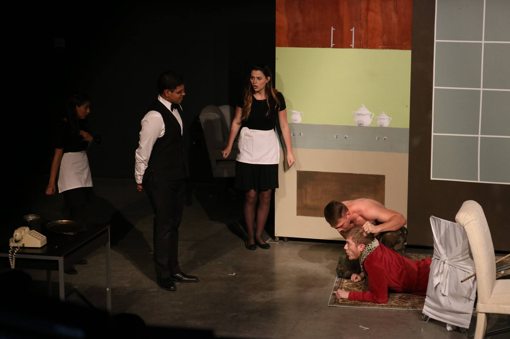

Seymour the Cannibal
Role: Assistant Director
Playwrite: David Rhoads
Directors: Heather Barnwell, Serena Zamarripa
Photographer: Marc Cornejo
University of Texas Theatre Guild
Seymour the Cannibal is a play about class struggle and ethics, featuring a cannibalistic vagrant by the name of Jeremiah Pith who impersonates a wealthy man named Seymour in order to search out his next victims.


 



Concept
As the assistant director I had a hand in every part of the theatrical process, from 10+ hours of rehearsals every week to coaching and managing a 25+ person cast/crew.